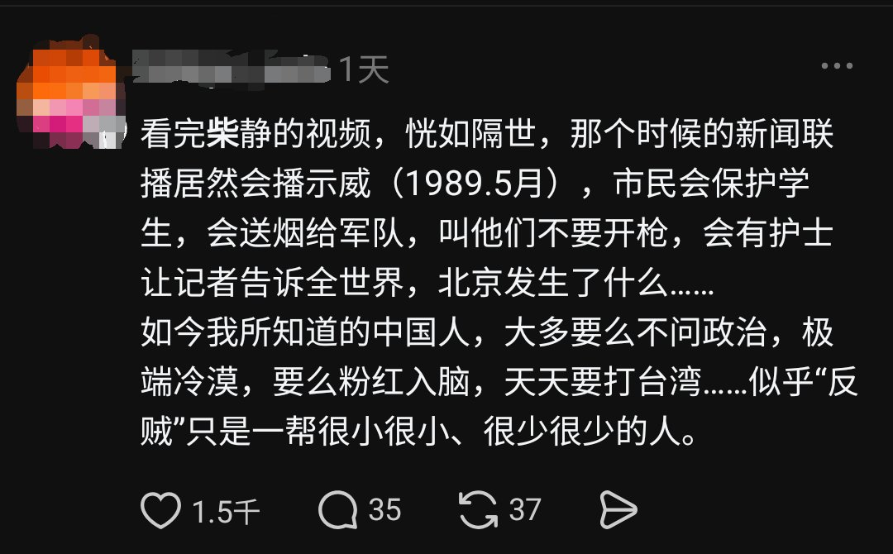
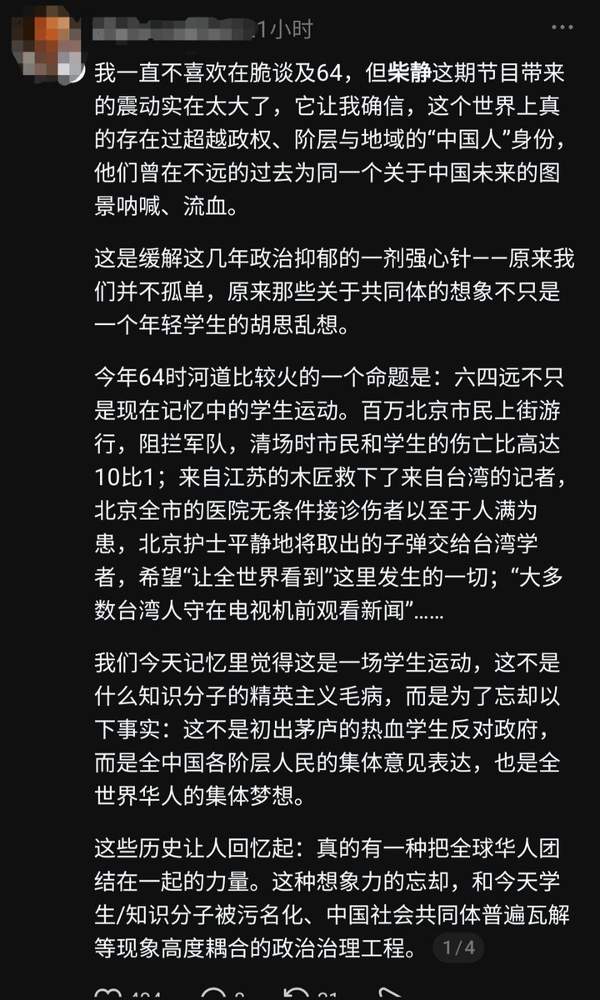
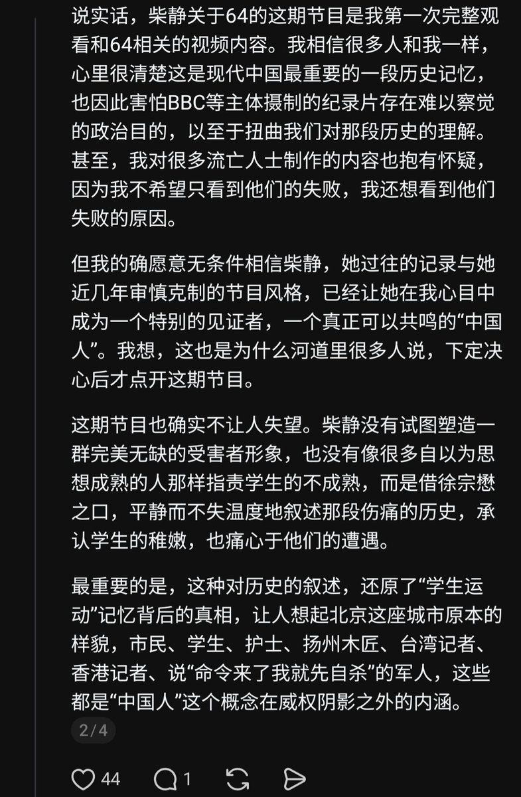
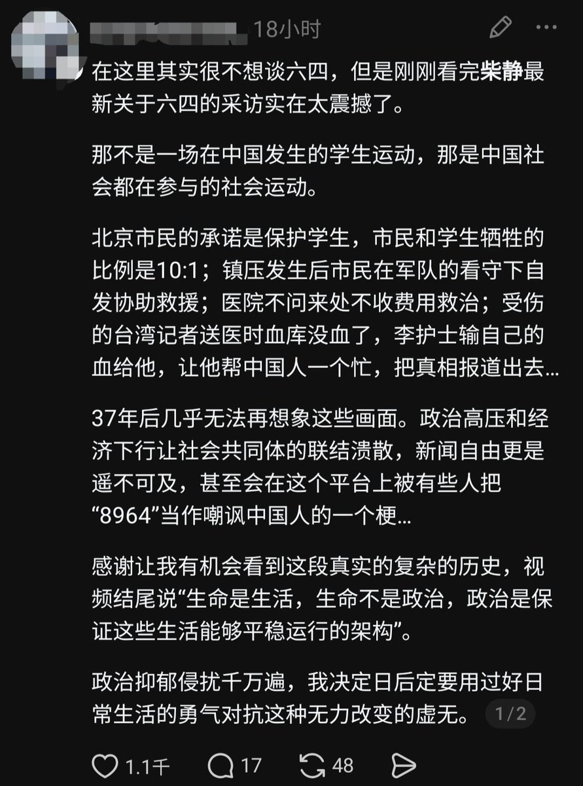

amber
@amber_medusozoa
果然极端民族主义披上自由主义的皮就没人能认出来了




中国人权-Human Rights in China
@hrichina
【柴静最新节目掀起年轻一代六四大讨论】前央视记者柴静在YouTube上最新一期节目聚焦六四，采访了在天安门广场中弹的台湾《中国时报》记者徐宗懋，3天时间获得超47万点击量，并在各社交平台上让许多中国年轻人第一次突破禁忌，展开对六四的热烈讨论。 https://t.co/FSPCvqRkUD